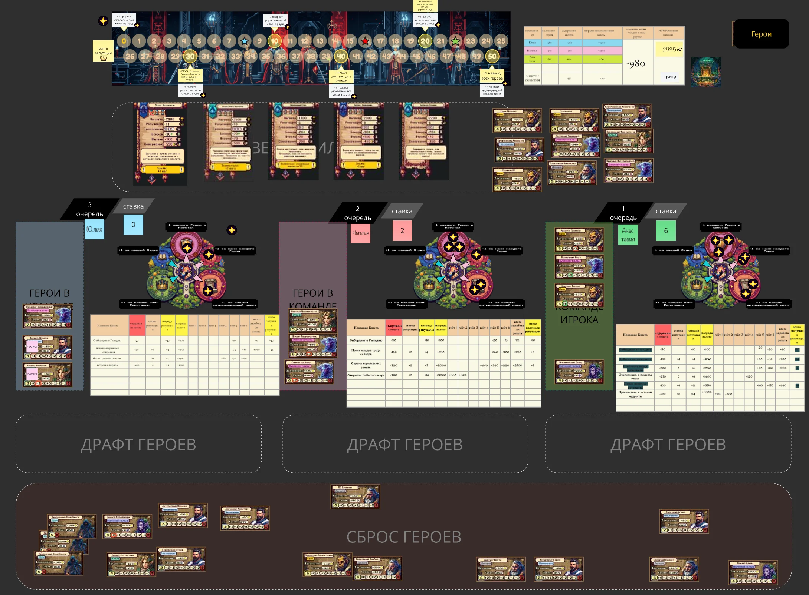
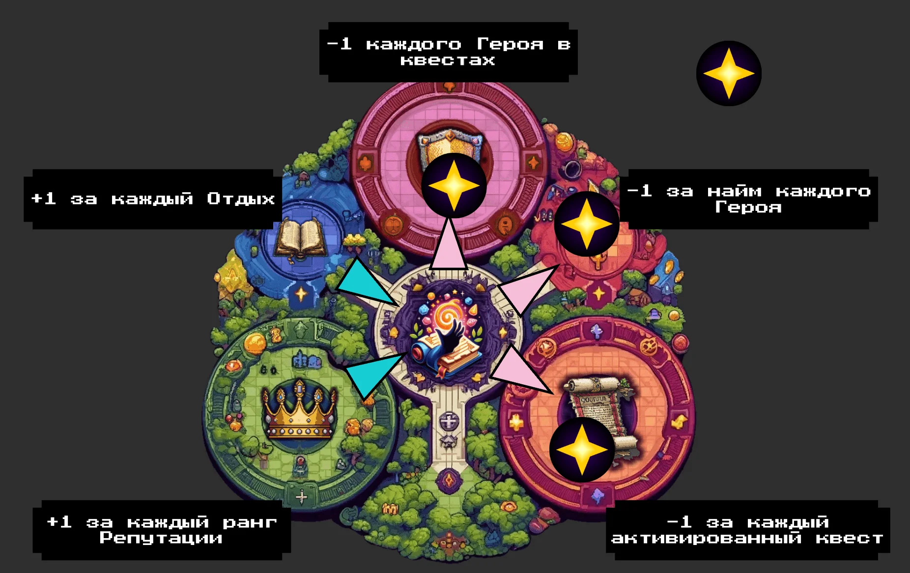
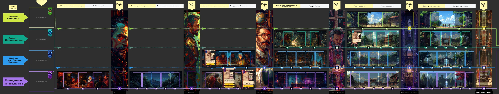
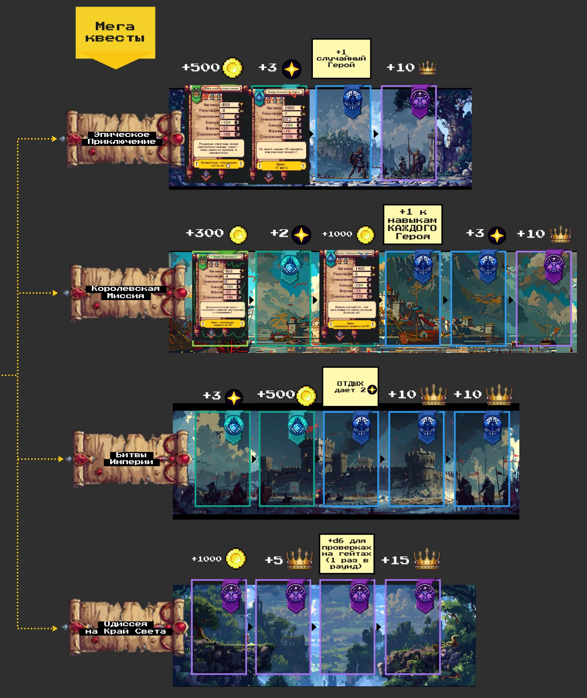
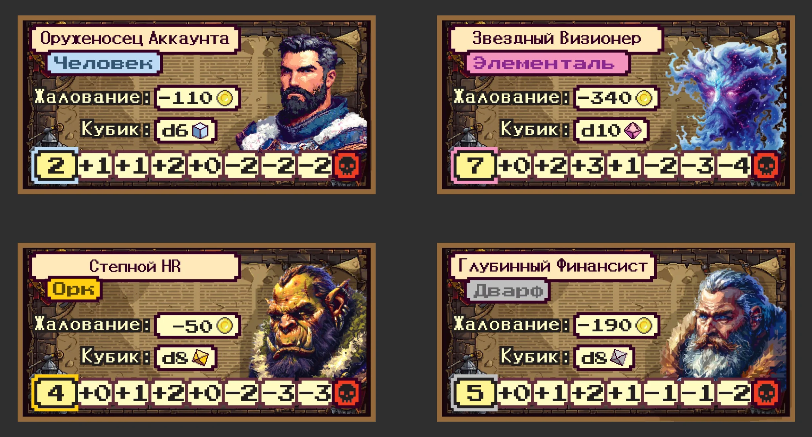
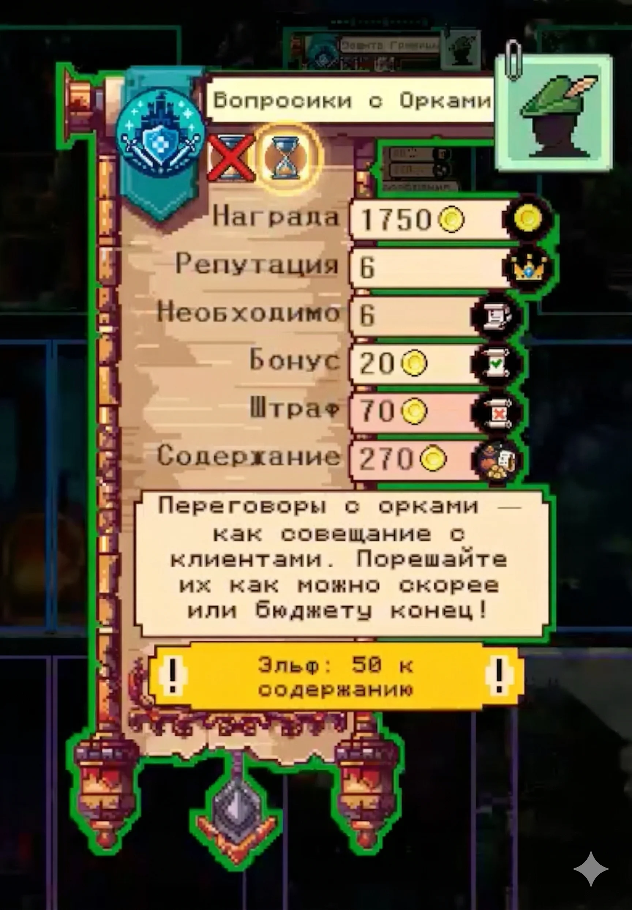

Корпоративные Легенды —
Stage Gate в офисном фэнтези
Corporate Legends —
Stage Gate in office fantasy
Бизнес-игра для практического тренинга методологии Stage Gate в сеттинге офисного фэнтези. Игроки управляют гильдиями приключенцев — нанимают героев, берут квесты-проекты, проводят их через стейджи и гейты. Прошла путь от настольной игры в Miro и офлайн до цифрового приложения на Unity, сейчас идёт к полностью автономной многопользовательской версии. A business game for hands-on training of the Stage Gate methodology in an office-fantasy setting. Players run adventurer guilds — hiring heroes, taking on quests-as-projects, moving them through stages and gates. The product has evolved from a board game (Miro online + offline) to a Unity application, and is now heading toward a fully autonomous multiplayer version.
Что этоWhat it is
Игра-тренажёр методологии Stage Gate в сеттинге офисного фэнтези. Гильдии приключенцев, квесты вместо проектов, герои с разными навыками вместо команды, выгорание — буквально выгорание. Stage Gate — каркас принятия решений в управлении проектами, и игра не объясняет его, а заставляет принимать те же решения на гейтах в реальном времени: продолжить, переделать, заморозить или закрыть квест с потерей вложенного.
Проект развивается с 2024 года. Сначала — настольная игра в двух форматах: онлайн в Miro и офлайн в коробке. Затем заказчик вернулся с задачей вырастить онлайн-формат до полноценного цифрового продукта — мы сделали Unity-приложение. Сейчас идёт работа к следующему витку: автономная многопользовательская версия, где роль ведущего берёт на себя само приложение.
A trainer for the Stage Gate methodology in an office-fantasy setting. Adventurer guilds, quests instead of projects, heroes with different skills instead of a team, burnout meaning, well, burnout. Stage Gate is the project-management decision framework, and the game doesn't explain it — it makes you make the same decisions at gates in real time: go forward, redo, hold, or kill the quest and lose what you invested.
The project has been evolving since 2024. First — a board game in two formats: online in Miro and offline in a box. Then the client came back with a task to grow the online format into a full digital product — we built a Unity application. Now work is heading toward the next iteration: an autonomous multiplayer version where the app itself takes the facilitator's role.
Что я сделалWhat I did
Полная графика проекта во всех версиях — стилистика, иллюстрации, иконография, оформление компонентов и интерфейса.
Первые версии (настолка) — геймдизайн в паре с партнёром. Цифровая Unity-версия — адаптация и развитие механик уже моя зона ответственности целиком.
Работа продолжается — следующий виток это автономная многопользовательская версия, в которой приложение ведёт игроков через игру без человека-фасилитатора.
Full graphics across every version — visual style, illustrations, iconography, component and interface design.
The early versions (board game) — game design in pairs with a partner. The digital Unity version — adapting and evolving the mechanics is fully my territory.
Work continues — the next iteration is an autonomous multiplayer version where the app runs players through the game without a human facilitator.
Компоненты и скриншоты Components & screenshots






РЖД · Run & Change → Russian Railways · Run & Change →
Unity-симуляция для топ-менеджмента. 9,6/10. Команда 16 человек. Unity simulation for top-management. 9.6/10 rating. 16-person team.